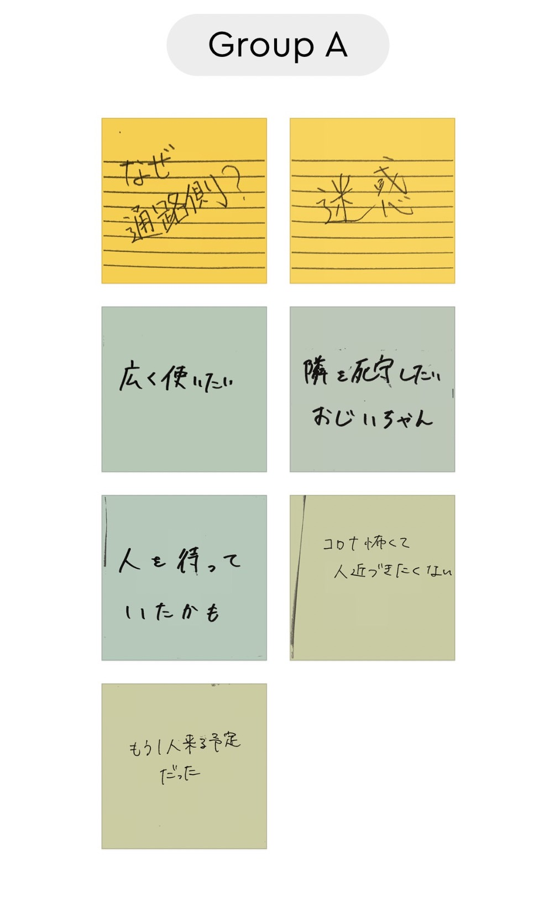
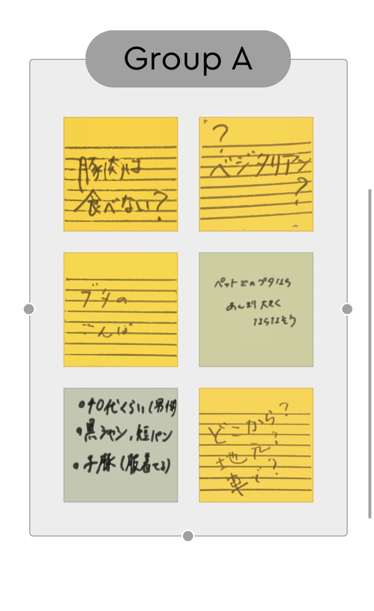
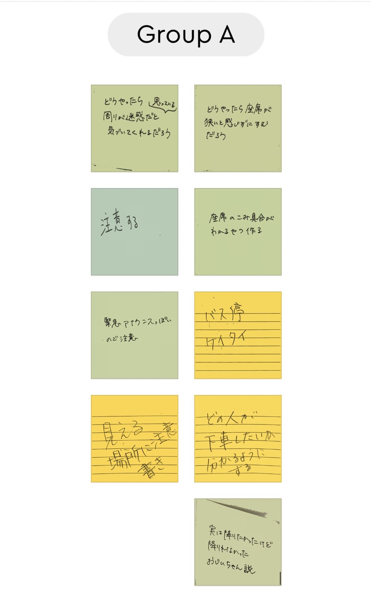
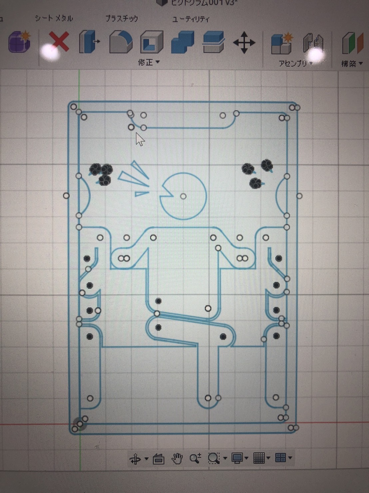
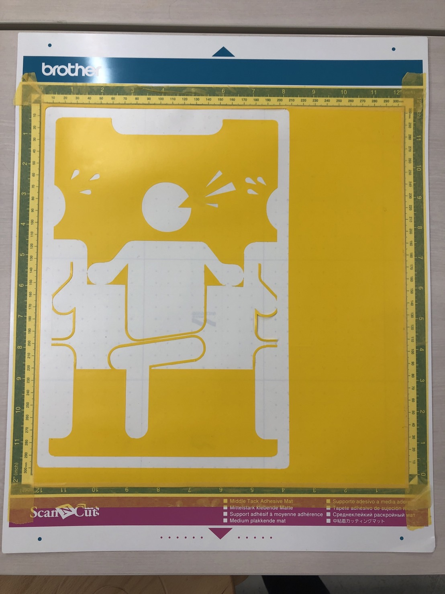
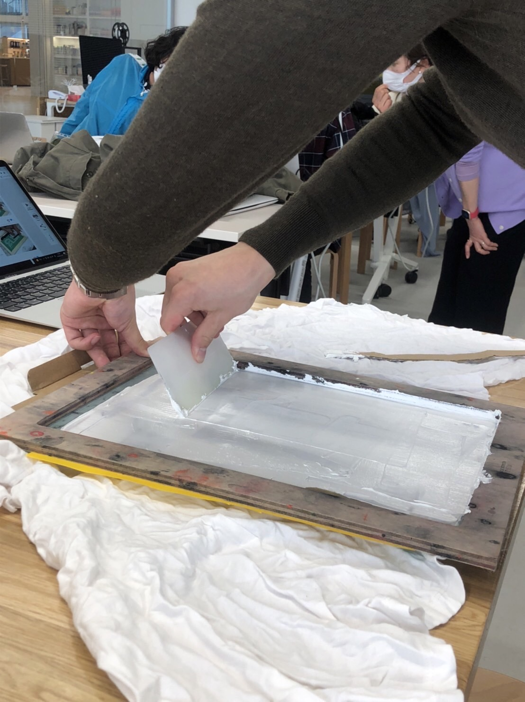
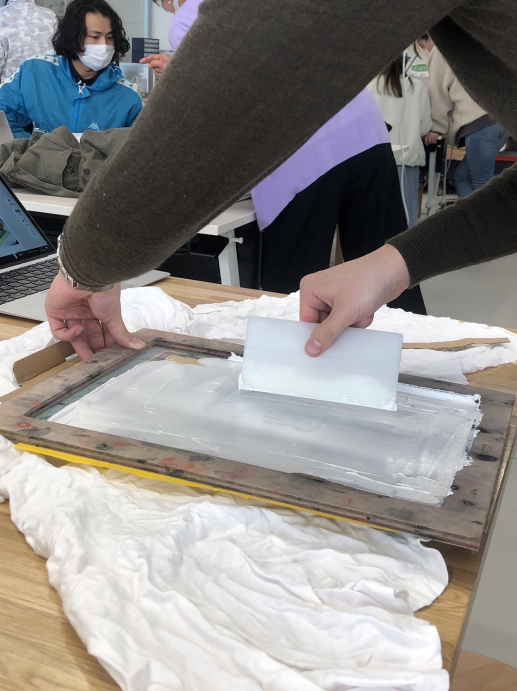
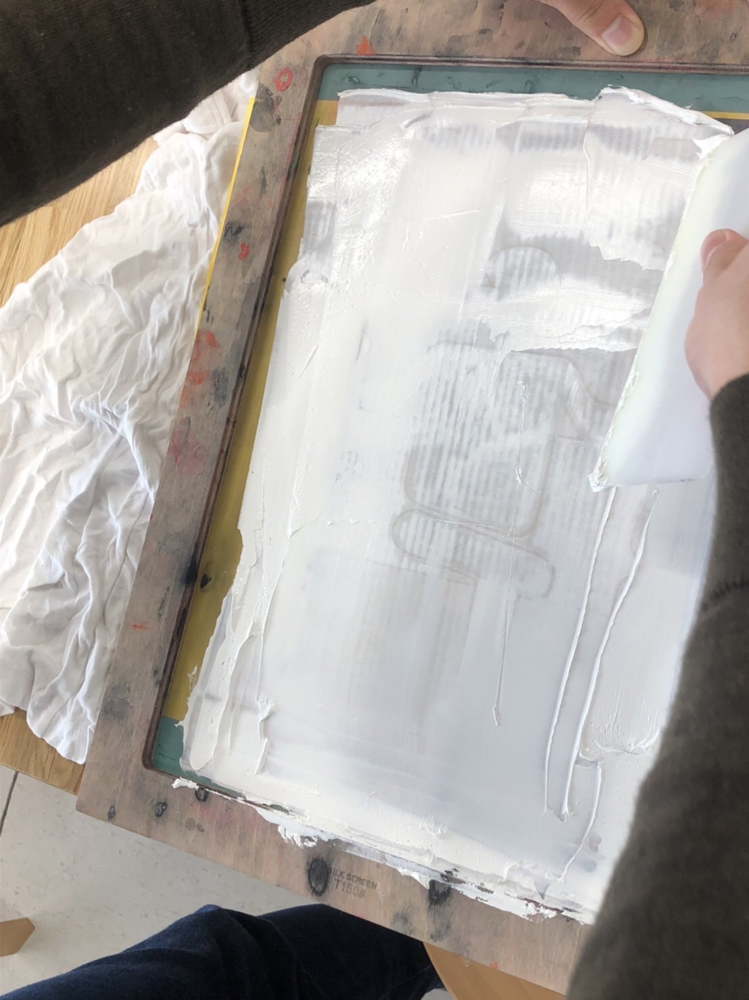
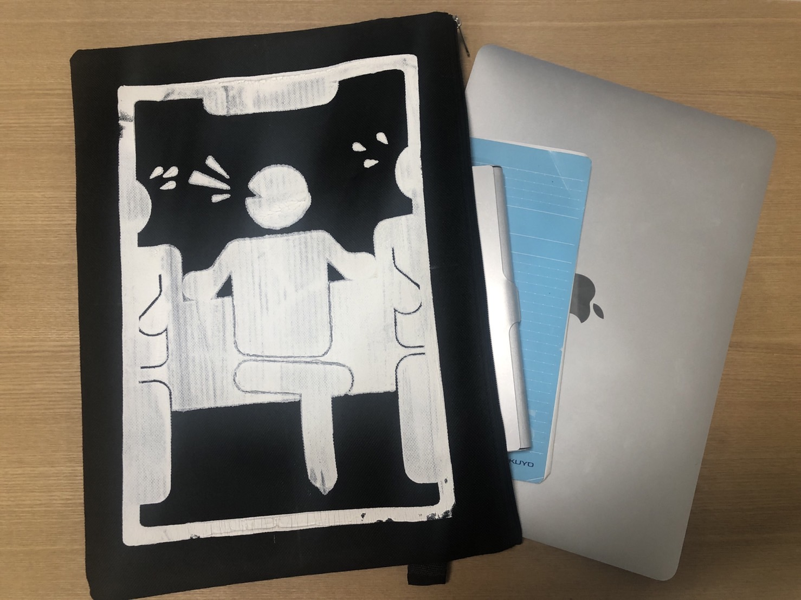

説明
経緯
グループワークから

グループワークのアイディアから日常生活においてマナーの悪い人へ直接声をかけない抑止力になるようなものを作ろうと考えました。
また、東京オリンピックの開会式でも話題になったピクトグラムを用いて、だれもが見て理解できる、デザインにしようと考えました。
デザイン

Fusion360を用いて、ピクトグラムをデザイン
電車やバスにおいて、うるさく周りに迷惑をかけているマナーの悪い人を再現
カッティング＆ペイント

カッティングシートをカッティングマシーンを用いて、カッティングする。
カッティングしたものの余分な部分を剥がし、リタックシートをカッティングシート上部に張り合わせる。
スクリーン張り枠にカッティングシートとリタックシートが合わさったものを張り合わせる。
リタックシートを剥がす
プリント対象物にチャコペンで印をつける
プリント対象物の上にスクリーン張り枠を置きインクを乗せ伸ばす



完成品
